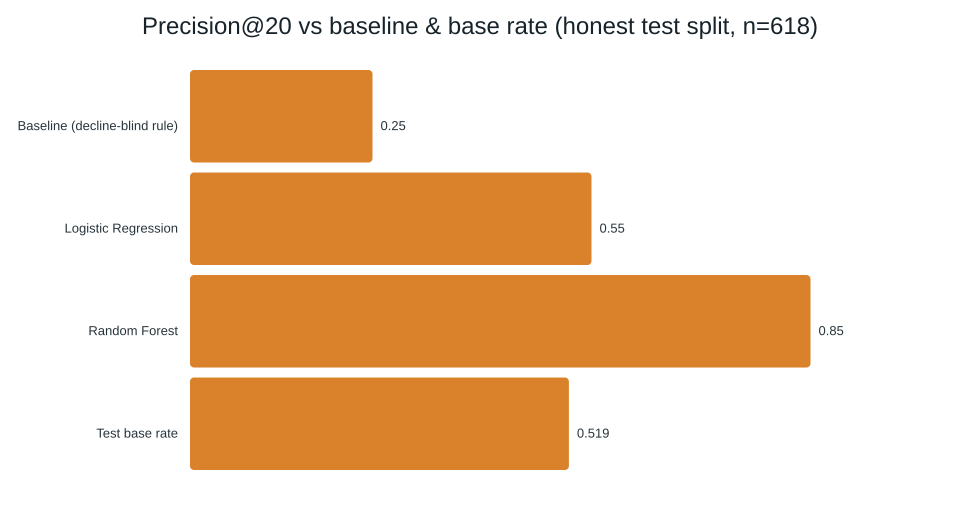
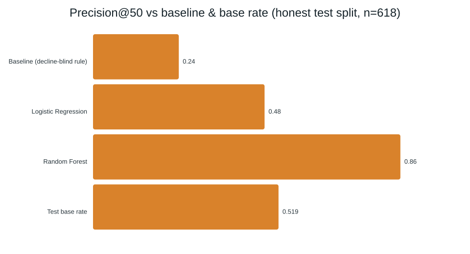
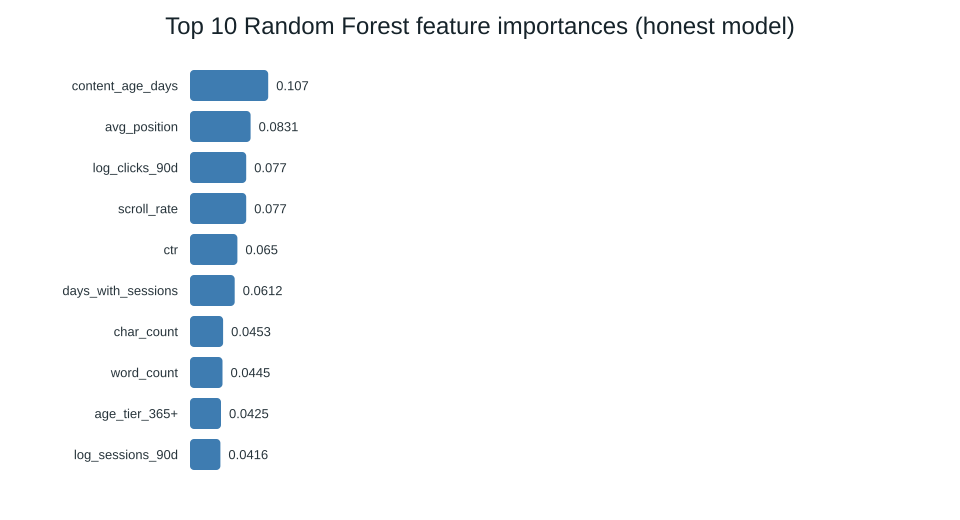
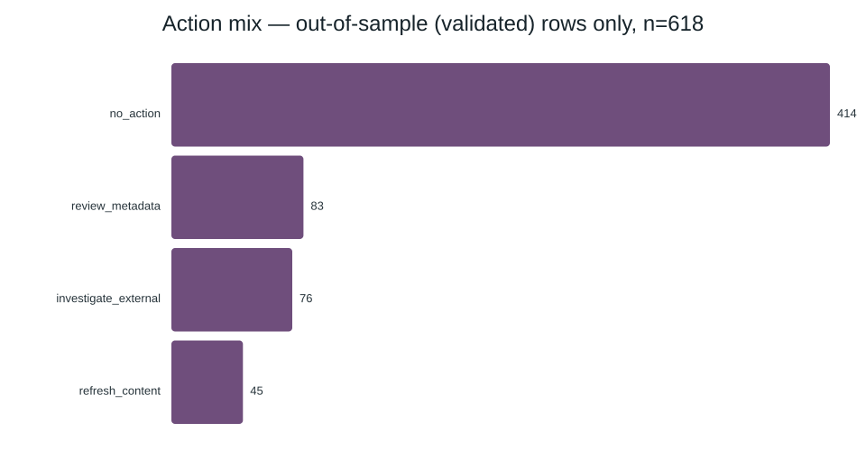

Introduction
A strategist opens the dashboard Monday morning. Thousands of pages, twenty review slots this week. Which ones?
That's the decision this project supports: not "is this page declining" as a yes/no, but "given limited review time, which pages should a human open first." That framing makes it a ranking problem, evaluated with Precision@K — of the top-K pages the system surfaces, how many actually turn out to be worth the reviewer's time — always read against the test population's own base rate, since a high score on an easy split isn't the same achievement as one on a hard split.
Getting this wrong costs something in both directions. Flag a healthy page and an editor burns an hour on nothing. Miss a genuinely declining one and a real client keeps losing organic traffic that could have been caught early. Neither error is free, which is why this paper reports precision at the top of a ranked list rather than a single accuracy number.
What this paper does not claim: it does not predict Google's ranking algorithm, and it does not claim that acting on a flagged page causes it to recover. Both boundaries are treated as first-class content in Limitations, not an afterthought.
Data
The modeled result in this paper is built on data/raw/content_refresh_anonymized.csv — one row per pseudonymized content item, aggregated over a trailing 90-day window.
No client names, domains, URLs, titles, or raw search queries appear in this dataset at any point. content_id and client_id are hashed pseudonyms used only for grouping and for building the client-holdout split described in Methodology — never as model inputs.
Warehouse contact (proof of mechanics, not the modeling basis)
A separate exercise queried the full production warehouse this dataset is sampled from — a 79-million-row, star-schema release, accessed via DuckDB rather than downloaded in bulk — against one arbitrary month. That check surfaced real warehouse structure worth naming honestly: only 55 of roughly 70 clients had any activity that month, GSC availability sat at 36.7% of rows versus 4.2% for GA4, and deliberately mixing a same-window future column into a small warehouse-native model reproduced this project's central leakage lesson on real rows (ROC AUC jumped from 0.601 to a suspicious 1.000). That exercise proved the warehouse's join keys and leakage risks — it did not feed the model reported in Results, which stays scoped to the CSV above throughout.
What was deliberately excluded
| Excluded | Why |
|---|---|
trend_direction, trend_pct | The label source. Used to build the target, never fed to the model — that combination is the exact leakage case this project's methodology exists to catch. |
content_id, client_id | Grouping and split keys only. A model that could see which client a row belonged to could memorize client identity instead of learning transferable signal. |
| FlyRank's own product decision flags | Not present in this dataset at all, by design — there is nothing to accidentally reproduce. |
Methodology
Label
is_declining_label = (trend_direction == "down"), itself a ±20% threshold on trailing 30-day impressions versus the prior 30 days. This is a proxy label — a same-window calculation, not an observed future outcome — and every number in this paper inherits that limitation.
Baseline
A transparent, decline-blind rule: percentile rank of days since last update, plus percentile rank of 90-day impressions. It never looks at the label or its source columns to decide who ranks where, which is what makes an honest comparison against a trained model possible.
Model features
Numeric — search volume, competition, CPC, word/character count, logged 90-day impressions/clicks/sessions/AI sessions, days with impressions/sessions, content age, days since last update, CTR, average position, engagement rate, scroll rate, AI traffic share. Categorical — competition level, content type, main intent, age tier, freshness tier, word-count tier, impression tier, position tier. Missingness in keyword-context fields tracks content type rather than occurring at random, so missingness flags are added before filling gaps, keeping that pattern visible to the model instead of silently zeroing it out.
Both baseline and model apply the same eligibility floor — impressions_90d ≥ 500 — for the same reason in both places: rate-based metrics like CTR swing wildly below a minimum volume.
Why the baseline is rank-based, not raw values
The formula above wasn't the first thing tried. An earlier version scored pages as days_since_last_update × impressions_90d directly — and it performed worse than random on the full eligible population (Precision@20 = 0.45, Precision@50 = 0.44, against a 0.596 base rate). The cause was a scale mismatch, not a wrong hypothesis: impressions_90d ranges into the hundreds of thousands while days_since_last_update ranges roughly 0–300, so multiplying them together let impressions dominate almost entirely — the two columns correlate at 0.79. Replacing raw values with each column's percentile rank before summing fixed the scale problem and lifted Precision@20 to 0.80, the version reported throughout this paper. Precision@50 still degrades on the full population for a separate, unrelated reason — addressed directly in Limitation 4.
Validation design
A client-holdout split: unique clients are shuffled with a fixed seed and the top 20% (6 of 32) are held out entirely, so no client's pages appear in both train and test. This guards against a model — or a hand-written rule — memorizing a client's quirks rather than learning something that generalizes. After the eligibility filter, the honest test set is 618 rows across 4 clients, with one client contributing 598 of them (96.8%). That concentration is a real constraint of running an honest split on a 30K-row dataset, and it is carried through every result below rather than smoothed over.
Leakage checks
- Banned-column check — confirmed the label source and ID columns never enter the feature matrix.
- Deliberate-leak calibration — adding the label's own source column back in as a feature pushed the top feature's importance from 11% (a 1.3× gap to the runner-up) to 84% (a 42× gap), and precision to a suspicious 1.000. That gives a concrete signature of what a leak looks like in this pipeline to check the honest model against.
- Warehouse-level replication — the identical signature (AUC 0.601 → 1.000) reproduced on real warehouse rows in a separate exercise, confirming the mechanism isn't an artifact of one CSV.
Results
All three methods below were scored on the identical held-out test split (n=618) — a set of clients and pages none of them saw during training.
| Method | Precision@20 | Precision@50 |
|---|---|---|
| Baseline (decline-blind rule) | 0.25 | 0.24 |
| Logistic Regression | 0.55 | 0.48 |
| Random Forest | 0.85 | 0.86 |
| Test base rate | 0.519 | 0.519 |

Takeaway: the baseline sits below the 0.52 line it should be beating by default — it is worse than picking pages at random on this split. Random Forest is the only method that clears the line by a wide margin.

Takeaway: Logistic Regression's ranking quality actually falls below chance once you look 50 pages deep instead of 20 — the deeper list is not a "more of the same" extension of the shallow one.
The 0.86 needs a caveat, not a headline. Random Forest's own training-set precision is 1.000 — a documented overfitting signature. Pulling tree complexity back with min_samples_leaf shows why a single number can't be trusted here:
| min_samples_leaf | Train P@50 | Test P@20 | Test P@50 |
|---|---|---|---|
| 25 | 1.000 | 0.85 | 0.86 |
| 50 | 1.000 | 0.80 | 0.78 |
| 100 | 0.980 | 0.65 | 0.74 |
| 200 | 0.980 | 0.75 | 0.66 |
Train precision barely moves even as tree complexity is pulled back hard, while test precision swings noisily with no clean trend — not the pattern you'd expect from regularization resolving overfitting. That's the signature of a test set too small (618 rows, one dominant client) to pin a Precision@K down to two decimal places. The honest claim is "0.65–0.86, consistently above the 0.519 base rate" — a real, repeatable direction of result, not a precise 0.86.
How much of that range is just sampling noise?
The regularization sweep above changes the model; a bootstrap changes the sample. Holding the trained model and its scores fixed, and resampling the 618-row test set with replacement 2,000 times, gives a 90% interval of [0.70, 0.95] for Precision@20 and [0.76, 0.94] for Precision@50, around the same 0.85 / 0.86 point estimates. In 99.9%+ of resamples, both metrics still clear the 0.519 base rate comfortably — "beats chance" is not sensitive to which exact rows happened to land in this test set. The precise decimal is.
This interval only captures uncertainty from which of these 618 rows get resampled — it cannot inject client diversity that isn't there. Since 96.8% of the test set is one client, the interval is still a statement about that client's content specifically, not a broader claim about the rest of the portfolio (Limitation 2 is unaffected by this check).

Takeaway: no single feature dominates — the top feature (content age) holds about 11% of total importance, with a gentle taper across position, clicks, scroll rate, and CTR behind it. That gradual shape is what a model integrating several real, weak-to-moderate signals looks like; a leaked label instead produces one feature holding 80%+ and everything else near zero (confirmed directly in the leakage check above).
Split design changes the gap more than model choice does
Both models were also compared on a naive, row-level random split — the kind you'd get by splitting rows without grouping by client — against the honest client-holdout split used everywhere else in this paper. The gap between naive and honest was not evenly distributed across methods:
| Method | Naive split | Honest split | Gap |
|---|---|---|---|
| Logistic Regression — P@20 | 0.90 | 0.55 | −0.35 |
| Logistic Regression — P@50 | 0.84 | 0.48 | −0.36 |
| Random Forest — P@20 | 0.95 | 0.85 | −0.10 |
| Random Forest — P@50 | 0.88 | 0.86 | −0.02 |
Logistic Regression's gap is 3–18× larger than Random Forest's. The likely mechanism is scale, not a threshold effect: within a single client, a feature like impressions_90d tends to sit in a narrow band, so its raw magnitude silently signals client identity almost as much as it signals decline risk. A single global linear coefficient can ride that shortcut cleanly; Random Forest's per-tree bootstrap sampling and random feature subsets dilute reliance on any one such shortcut across the ensemble.
This is not evidence that Random Forest generally resists client-identity leakage — the honest test set is 96.8% one client, so a smaller gap here could just as easily reflect that one client's structure being easy for trees to capture, not a general robustness property. The reliably true part is narrower and still worth stating: on this dataset, the naive-vs-honest gap is real, and it is far larger for Logistic Regression than for Random Forest.
Limitations
Written here, before a reader has to find them elsewhere.
The label is a same-window proxy, not a future outcome.
It compares two halves of an already-completed window against each other. It has never been checked against what actually happened to a page afterward. A genuine future-window label — prior 90 days predicting the next 30 — is the concrete next step, not a nice-to-have.
The test set is effectively one client.
96.8% of the honest test rows belong to a single client. The 0.65–0.86 precision range describes that client's content specifically; extending that confidence to the rest of the portfolio isn't supported by this design. A bootstrap over these same rows (§4) quantifies how much the number wobbles from row-level sampling — it does not, and by construction cannot, address this limitation, since resampling from one client's rows still only describes that client.
The model can't tell a decline from a recovery with the same profile.
A currently-declining page and a currently-recovering one can share an identical weak-position / low-CTR / stale-update signature. The one feature that would resolve the ambiguity — recent trend — is exactly the column the leakage audit correctly excludes. Concretely, on the honest test set:
| Case | Model score | Avg. position | CTR | Actual trend |
|---|---|---|---|---|
| False positive — flagged, actually growing | 0.75 | 35.9 | 0.00 | +64.5% |
| False negative — missed, actually declining | 0.70 | 13.7 | 0.00 | −94.7% |
Both rows come from the model's own dominant test client and sit within 0.05 of each other on a 0–1 score — a narrow, overlapping band, not a random miss. The model consistently treats "weak position, low CTR, stale update" as similarly risky regardless of which direction the page is actually moving, because it has no feature that could tell it otherwise.
A synthetic-data artifact affects the staleness signal.
87.9% of the test-eligible slice shares one exact "days since update" value; a different single value covers 38.6% of the full eligible population. Different value, same shape — almost certainly a batch artifact of anonymization, not real staleness variation.
A decline can be a lookalike, not a real one.
Consolidation (a sibling page absorbing demand), seasonality, and SERP or AI-feature click loss can all produce the same observable drop this label captures — none of them are fixed by a content refresh.
No causal claim.
Nothing here shows that refreshing a flagged page causes it to recover. That would require an experiment — staggered refresh timing with a matched control — which was not run.
Not validated on the full warehouse.
The modeled result is scoped entirely to the 30K-row CSV. The warehouse exercise in §2 proved mechanics on one arbitrary month; it does not extend this model's validity.
Ranked recommendations
The model scores the full eligible population (16,726 rows), but every row carries a validation_status flag so a reviewer never mistakes a directional, in-sample score for a genuinely tested one. The queue is sorted by that flag first, score second — out-of-sample rows always surface before in-sample ones, regardless of raw score.

Takeaway: within the trustworthy tier (n=618), most pages need no action at all — flags are the exception, not the default, which is what a usable review queue should look like.
| Metric | Value |
|---|---|
| Total flagged (actionable) rows, full eligible population | 4,290 |
| Distinct clients represented among flagged rows | 23 |
| Share of flagged rows in just the top 3 clients | 67.5% |
| Rows carrying the "stale update" tag (weakest reason code — see Limitation 4) | 1,787 |
| Pages below the eligibility gate — no recommendation at all | 44.2% |
Who this is for: a content strategist with limited weekly review time, deciding what to open first — never an auto-apply system. Every flagged row is a suggestion to check against the actual page, using its reason codes, before anyone takes action. A page outside the top-3-client concentration, or outside the 618-row validated tier, should be treated as less proven regardless of its score.
Reproducibility
Everything above can be rerun from a clean clone:
git clone https://github.com/Ali-Shahrez/flyrank-ml-internship.git cd flyrank-ml-internship pip install -r requirements.txt jupyter notebook work/notebooks/capstone.ipynb # Runtime → Run all
The client-holdout split uses np.random.default_rng(42) throughout — the same seed in every notebook from the baseline (Week 4) forward, so the 27,675/2,325 train/test counts and the 618-row honest test set reproduce exactly.
- Full repository
- Capstone notebook — the source for every number and chart on this page
- All weekly notebooks — baseline, modeling, validation audit, and action playbook, in order